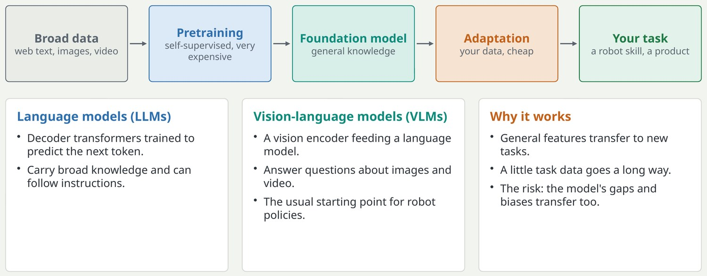
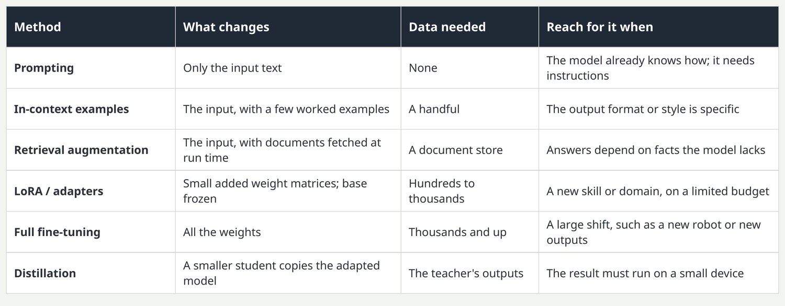
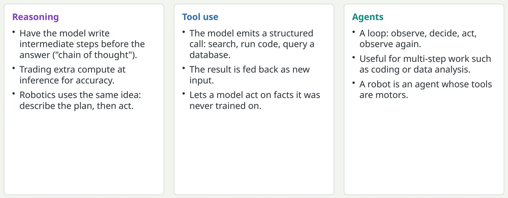

Pretrain once, adapt many times
A foundation model is trained on broad data at great cost, then reused for many tasks at low cost.

The economics changed the field. Pretraining takes huge data and compute and is done by a few groups. Adaptation takes a small dataset and a modest budget and is done by everyone. In robotics the pretrained model is often a vision-language model that already understands images and instructions; robot data teaches it to act.
Key pointAlmost no one trains from scratch any more; the skill is choosing a starting model and adapting it well.
The adaptation ladder: try the cheap rungs first
Ways to get a pretrained model to do your task, ordered from least to most effort.

LoRA stands for low-rank adaptation: instead of updating a large weight matrix, learn two small matrices whose product is added to it. It trains a fraction of a percent of the parameters. For robot policies, full fine-tuning is still common because actions are a new kind of output, but LoRA on the language backbone plus a newly trained action head is a frequent compromise. Data counts are rough orders of magnitude.
Key pointClimb only as far as the task needs; each rung costs more data, compute and maintenance.
From answering to acting: reasoning, tools and agents
Language models are increasingly used to plan and to take steps, not only to reply.

Chain of thought returns in section 8 as embodied reasoning, where a policy first states what it sees and intends, then outputs actions. The agent loop of observe, decide, act is the same loop as a robot controller, just slower and in text.
Key pointReasoning and tool use are the bridge from chat models to systems that do work, including robots.